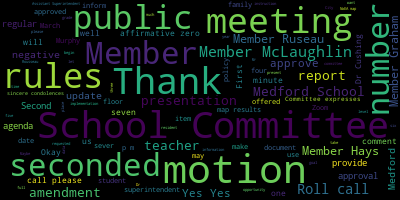

AI-generated transcript of Regular School Committee Meeting - March 21, 2022
English | español | português | 中国人 | kreyol ayisyen | tiếng việt | ខ្មែរ | русский | عربي | 한국인
Back to all transcripts
[Lungo-Koehn]: We have our regular meeting, sixth regular meeting of the Medford School Committee tonight at 6.30 p.m. at the Howard Alden Memorial Chambers, Medford City Hall. You can also watch by Zoom or call in by using phone number 1-929-205-6099. Please enter meeting ID 939-6258 5795 when prompted. Member Ruseau is on Zoom. Okay.
[Ruseau]: Hello.
[Lungo-Koehn]: Would you like to call the roll, Member Ruseau?
[Ruseau]: Yes. Member Graham?
[Lungo-Koehn]: Here.
[Ruseau]: Member Hays?
[Unidentified]: Here.
[Ruseau]: Member Katz?
[Unidentified]: Here.
[Ruseau]: Member McLaughlin?
[Unidentified]: Here. Member Mustone? Member Mustone?
[Lungo-Koehn]: Here.
[Ruseau]: And Mayor Lungo-Kearns?
[Lungo-Koehn]: Present, seven present, zero absent. Are there any student representatives on the call, Dr. Cushing? No, but we have a student from Northeastern, Julia. Well, welcome, okay. Can all rise to salute the flag, please? I pledge allegiance to the flag of the United States of America and to the Republic We have the consent agenda, approval of bills and payrolls, regular school committee meeting minutes from March 7th, 2022, and Committee of the Whole meeting minutes from March 9th, 2022.
[McLaughlin]: Motion to approve.
[Lungo-Koehn]: Second. Motion for approval by Member McLaughlin, seconded by Member Kreatz. Roll call.
[Ruseau]: Member Graham.
[Hurtubise]: Yes.
[Ruseau]: Member Hays.
[Hurtubise]: Yes.
[Ruseau]: Member Kreatz. Member McLaughlin.
[Hurtubise]: Yes.
[Ruseau]: Member Mustone. Yes. Member Ruseau, yes. Mayor Lococo, yes.
[Lungo-Koehn]: Seven the affirmative, zero the negative. Consent agenda has been approved. Number four, we have reports of subcommittees, which there are none today. Number five, report of superintendent. First up is superintendent's updates and comments, Dr. Maurice-Edouard-Vincent.
[Edouard-Vincent]: Thank you, Mayor. Good evening, school committee members. So good evening, this is your proud superintendent sharing some updates for the week. For the previous two weeks that we haven't met the past two weeks. So we meet tonight. Today, March 31. And today is World Down Syndrome Awareness Day. It's a global awareness day officially observed by both the United Nations and the World Health Organization. Today, being the 21st of the third month, it was selected to signify the uniqueness of the trisomy of the 21st chromosome, which causes down syndrome. The theme this year, which is selected by the United Nations is hashtag inclusion means. which empowers everyone to be able to advocate for equal rights for people with Down syndrome and reach out to stakeholders to bring about positive change. Again, this is being recognized globally today. And as I had shared in my communication last Friday, you can wear a brightly colored top. I'm wearing a multicolored necklace and I have different socks on my feet. in support in collaboration of those who have down syndrome. So again, the theme of this year was inclusion means, and just for us to be able to take a moment to reflect on what does inclusion mean to us.
[Unidentified]: Thank you.
[Edouard-Vincent]: I also wanted to share with our community that our parents and caregivers, this is an important announcement regarding your tax credits. If you don't normally file a tax return, but you're eligible for the child tax credit, you can still claim the child tax credit on your 21 tax return, even if you had no income during the entire year of 2021. So there were advanced payments that were made in 2021, but they were not the full amount of the credit. So the 2021 child tax credit is 3600 for each qualifying child under the age of six. and 3000 for each child between the ages of six and 17. So for further information, you can go to the IRS website, which is irs.gov slash child tax credit for more information. I want to celebrate today, one of our students, Valentina Burke. She's a fifth grader at the Miss attack school, and she is the student who created the new logo. She was interviewed by the network transcript. Her design was voted the favorite by students, teachers, and parents of about 50 who submitted 50 submissions to the art teacher as part of a competition to fashion a symbol for the school. The design evokes the endless flow of water. The color speaks of serenity. The words embody the ethos of the newly named Missittuck School. Respectful, responsible, and safe. Students voted blind. The names of the artists were replaced by a letter, so that no one knowingly voted for a friend's submission. Even parents had a say. Dr. Kaye said Valentina was so surprised to hear her name. Valentina was assisted by her art teacher, Ms. Maseka, and Mr. Platti. Congratulations, Valentina. Also, I'd like to recognize some students who have been outstanding winter athletes, and they are our GBL All-Stars for the winter season. For basketball cheerleading, Andrea Sorobori. For boys basketball, Anthony Tashara-Kugler and Owen Kelly. For girls, basketball. Kate Jocelyn and Bella O'Brien. For gymnastics. Alexa Blaney and Alexandra Lombaro. For boys, ice hockey. Aidan Doherty, Leo Mantenuto, and Robert Shumway. For girls, ice hockey. Kena Swanson. For indoor track. Anna Casey, Maria Colombo, and Eastman D'Souza-Villera. For swimming, Clark Bararugo, Benjamin Boverman, Brendan Canavan, John DiPlacido, Elizabeth Hunt, Anaya Osius-Johnson, Marcos Pereira, Lindsey Quinn, Brendan Sheen, and Kaitlyn Chuang. Additionally, Mustang senior football captain Alvin LaGrosse was selected to the EMU Shriners All-Star team. Congratulations to all of you. And speaking about sports, the Medford Public Schools, in collaboration with Special Olympics of Massachusetts, will be offering unified track and field for all high school students, both with and without disabilities. The season will begin March 28th with three to four meets. Those interested should contact Miss Andre. At Medford High School, participation is limited. Additionally, this Wednesday, March 23 at 6pm, please join Medford CPAC and Medford Recreation to find out about new inclusive sports opportunities in Medford, which aims to provide inclusive sports enrichment programs to all children. Inclusive Sports uses innovative behavioral methods to teach sports, fitness and social skills. Programs are designed by physical education, behavioral and inclusion experts to introduce children to a variety of sports through a series of lessons focused on skill building. This meeting will be held by Zoom. So the ID number for that meeting is 950-815-21817 on Zoom. I want to just recognize that Medford is continuing to show support for Ukraine. Last Friday, the McGlynn Middle School CCSR students led the school in wearing blue and yellow in an effort of solidarity with Ukraine. The students collected items that will be shipped to refugee organizations on the ground in Ukraine and Romania. These items included bandages, gauze, ibuprofen, flashlights, toothpaste, and toothbrushes. Also, students in 7B, Ms. O'Donohue's geography class at the Andrews Middle School, hosted a fundraiser for Ukraine as well, offering blue and yellow face painting for a donation of $2. Over $400 was raised and will be sent to CARE. We are proud of our Mustang students seeing a need and extending their hands to help. Lastly, this Wednesday, March 23rd, is School Crossing Guard Appreciation Day in Massachusetts. It reminds all of us to honor the hard work of our crossing guards in helping to keep our school children safe. Their dedication is greatly appreciated and they should be recognized for their diligence. Thank you.
[Lungo-Koehn]: Thank you, Dr. Edward-Vincent. We have a budget update, Mr. David Murphy, Assistant Superintendent of Finance and Operations.
[Murphy]: Thank you, Mayor. Good evening members of the school committee. I said in my email to the committee earlier today that I was anticipating a relatively brief budget update based on where we are in the budget process today. And so I know more typically I provide a little more documentation ahead of this discussion but as we'll be having a multitude of discussions related to the budget over the course of the next month or so it seemed appropriate to try to to keep this update relatively concise. You have all now responded to the budget survey that was part of the budget process that we had discussed in January as we tried to find a way in which we could develop a process that would both keep the community informed, but also keep the process moving at hopefully what will be a somewhat expeditious pace. And so I wanted to thank the committee for making those submissions. As we said at the time, those are obviously a public record and not a discussion themselves, but that will help inform the administration as we develop our recommendations to you, which will then lead to the request that the school committee will make to the municipal government, most likely in late April or early May. The sort of most significant shift in the structure of the public presentations, which again we discussed in January, is moving away from The sort of somewhat repetitive process of each administrator explaining not frankly not explaining each line item because that's not something we've ever subjected the community to and I wouldn't given that it's a 67 and some odd million dollar budget I wouldn't recommend that we do subject the community to that. But instead of teasing out department by department. What we've tried to do is structure a process that will have what I would describe as four cornerstones of the budget, and within those cornerstones you will receive all of the information related to each department each school, all of the content that would typically be presented will still be made available, but the focus of our public discussions will be consistent both with the goals and priorities of the strategic plan that you adopted last spring, as well as the priorities that you yourselves have identified and what we hear from, from a community perspective, in terms of what the priorities are for the organization in order to advance those goals and I think that's sort of the important nexus that we're trying to establish is that we want to highlight the components of the budget that are in fact going to advance the organization organizations goals. So those four cornerstones and what at this point we'd recommend the for public hearings would be focused on first, how the budget advances our equity goals, and particularly with regard to supports for high need and most vulnerable students. The second piece would be on technology integration and utilization. The third would be our organizational structure. We've said here many times that, like most school districts the vast majority of our budget, our personnel expenses. That's true for any school system that's that's the nature of the work. But for that reason our organizational structure matters and we know that that in terms of the goal of making sure that the budget process allows the community to see inside the Medford public schools and see how we're organized, how we're spending taxpayer dollars, and how we're seeking to advance those goals. That would be the sort of the objective of that hearing. And then a fourth one, similar to what we did last year, where we would typically present the operating budget goals and then talk about specifically the goals that we had with respect to the COVID related funding. specifically the answer funding which is the funding air marked specifically for school districts, coming from federal legislation allocated through the state, and unlike the opera funding which is allocated at the city level. to support goals across the municipal government, including the schools, the answer funding is specific to the public school district and so in our case the public school district. And so that would be the fourth of those hearings we would then present that information similar to how we have and all the other budget presentations and talk about how the investments connect to the advancement of those goals, take the feedback from the committee and the community, and then return to you toward the end of April, or as I said, early May, with a final recommendation with the superintendent's budget, which you then, as again, we've talked about this timeline many times in the past, but just for community members who might be watching and hearing about this for the first time, that leads to the school committee's request to the municipal government. It is a number that is based on the needs and priorities of the school department. We have a concurrent responsibility to develop contingency plans so that we're able to put a budget into operation that works for students, that works for our individual school communities. And that next process would play out at the municipal level with the mayor and the city council, and then return to the school committee for a final vote of adoption, most likely in June. So that that's sort of the timeline in the sequence, the timeline pursuant to your vote has been posted on our website for some time. There are a few TBDs in that timeline. And so I was hoping to solicit some of your feedback. And I'm happy to pose those questions to you now, but I just want to pause and see if there's anything I can answer with respect to this information so far.
[McLaughlin]: Member McLaughlin, then Member Kreatz. Thank you. Thank you, Mr. Murphy. So for the, did you say there's a timeline posted on the website for with some TBDs? So for the timeline posted, is that including the feedback session from community.
[Murphy]: The feedback session is one of the TBDs that's in the budget tab in the website. And the reason for that is this, if I could, I had initially scheduled four separate sessions on four separate evenings on those four major components of the budget. It occurred to me after developing that tentative timeline that I think it would be a better service to the community. If we condense those days, and essentially did 60 to 90 minute hearing on one of the cornerstones, and then take a 15 minute break and do another one. I think folks who want to follow this process start to finish line by line. It is more burdensome to ask them to block out four evenings in their month of April than it is to block out two. It also, Frank, gives us a little more time and I think will improve the quality of the information that you receive. But if we were to do that, then I would also be, I think the listening session, we'd have just a little more flexibility on when the listening session would be scheduled. Our plan right now is to do a virtual listening session. I think we could certainly do one in person if that's what the committee would like, but basically we're just trying to open up a little more access to give folks an opportunity to comment and raise questions if they have them about our fiscal year 23 priorities. So what I'm really asking, I guess, is if the committee is receptive to my suggestion of condensing those hearings into two days rather than four, that will position us to schedule the virtual listening session from that point.
[Kreatz]: Thank you. Democrats, yes, I had a similar question. So I just went to the website and where are those meetings on the website, I must have missed a communication in the there's a budget tab under the about button.
[Murphy]: If you click about budget information, it'll it'll come up and show you the timeline.
[Kreatz]: I'm sorry.
[Murphy]: So I think as we go in, we'll move that to the front page. But Just on the main page.
[Lungo-Koehn]: Are you looking for the dates? Maybe they could be emailed to us tomorrow from the admin. Yeah, that'd be great.
[Kreatz]: And I was just curious, we are, like, I'm sorry, we are on the, like, so if I'm on the Medford Public Schools main page.
[Murphy]: I think Dr. Cushing is demonstrating for us now on the main page there. So main page about, there's a budget information tab, and then a budget development timeline. That's our historical budget if folks wanna look through previous year's budgets, and that's the tentative timeline that was, that we posted in February. I would, I think those that does have tentative dates for those hearings. But as I said, I, I think we'd be, I think it would be a better service from a transparency information perspective, if we were to condense them. The other question is if, you know, I've shared with the committee previously that these are the four components that we think are worth highlighting and think are sort of reflective of the totality of the goals and advancing the strategic plan. If there are other areas that the committee feels think deserve a focal point, then that's something I'd also like to know so we can, that will have an impact on the rest of the schedule.
[McLaughlin]: Can I respond? Oh, sorry. Member Kreatz? Thanks. Member McLaughlin? Thank you. Yeah, that's what I was going to ask. So would there be like a miscellaneous night if possible? If we need it, obviously we don't want to say that we have it, but just have a hold on a miscellaneous night in case there are any overflow items.
[Murphy]: So we have that, I believe, although I will check it, in that there are multiple nights that are booked. It may not have made it onto that list, but it is booked. in the, for the budget hearings themselves, that can be expanded to include a focal point. But I think that's a good idea because part of the point of some of these public discussions is to flesh out issues. And if there are ones that come up that we decide the community could benefit from a more formal sort of spotlight being shined on it, then I think that would be a good opportunity to do that. So I, it's certainly no problem to just sort of have a placeholder and use that for what we think we need to at that time. But also, as I said, if there's something that I, we based those four off of our previous discussions and sort of the priorities that the committee had identified and also wanting topics that were sufficiently broad to encompass the totality of the $67 million budget. But if there's, if there are other topics that there's a consensus now could be a focal point then I think that I think we should do that. But I think your point is well taken, Mr. McLaughlin, that we might know what we need to drill down on more after we have some further discussion. So that might make the most sense.
[Graham]: Member Graham? I think to try to answer the two questions I think you posed. One is, there's nothing that jumps out at me immediately, personally, that we would have to add to that list of four, but I agree we could find something along the way that we would want to dedicate time for. And then in terms of like four sessions versus two sessions, I am in favor of two sessions over like the extended short four session approach. April is the April calendar is already starting to escalate. So I and I think I definitely, I hadn't seen those states before, so I just need to look at them and I will let the superintendent know if there's any.
[Murphy]: That's just a tentative timeline that we posted. We're gonna issue it as we normally do a doodle poll to make sure that we have a quorum in the committee and then we'll move on from there.
[Graham]: But I do think trying to organize around two nights makes sense for the people who are interested in following the budget from end to end. Like I think coming up with like four nights across one month with school vacation right in the middle of it would be hard.
[Murphy]: Yeah, no, it doesn't. The more I looked at it, the more it seemed like a bad idea. But as it was my idea, I wanted to run it by a few more folks before confirming that. So I think that makes sense then. I think there'll be two nights each. If the committee has strong feelings about how we pair the two and two, I just be honest with you, I don't have strong feelings about it. Other than I will say, there's probably some value in if tech and the sort of COVID impact mitigation hearings were scheduled on the same evening, there'll be more of a focus on this sort of external funds that we have at our disposal, both because some of the tech pieces are capital expenditures and some are grant related and specifically ESSA and ARPA related. So that might have, there's a little bit of a correlation there that might make sense. Just as an example, if we were, you know, the bucket of equity and supporting most vulnerable students is a very broad bucket, clearly. It is an organizing principle of essentially everything else that we're doing. So as we tease that out, it's entirely possible, I would even say likely, that there may be some facets of it, some of which you're going to hear about this evening. that we may want to drill down on more in terms of counseling and mental health support and things of that nature. So I think we have flexibility. I appreciate the committee's contributions to sort of developing this. And I think it's an opportunity to both position you to advocate zealously on that path of the school system, but also to really sort of provide a tremendous amount of information to the community as to what we plan to do with their money over the course of the next fiscal year.
[Unidentified]: Great, thank you, Mr. Murphy. Thank you.
[Lungo-Koehn]: So everybody will get those dates from the website or by email and then let the administration know which ones you're available for and hopefully coordinate accordingly. Okay, number three, we have report on mental health supports, Ms. Stacey Shulman, Director of Counseling and Behavioral Health and Ms. Joan Bowen, Director of Pupil Services.
[Joan Bowen]: Good evening. I'm going to start off the presentation tonight just going over our staffing throughout the district as well as their responsibilities. So if you take a look at the slide deck, we will go through each one of the positions in our behavioral supports and let you know what their responsibilities are. And then we'll also give you the breakdown of the buildings that they're located in. And then Ms. Shillman will go more in depth into what is provided throughout the district. So we have school adjustment Councilors and school social workers. These providers, are the main staff that provide counseling. They do both individual and group counseling. They perform our functional behavioral assessments. They also do consults to the general education team, to parents, and they're also part of our community liaisons. Our school psychologists also provide counseling, both individual and group, but they also complete our psychological evaluations for special education. And this is for any student who is having an initial evaluation or is being re-evaluated. So those psychological evaluation, the WISC, that's performed by our school psychologists. And then we have our school Councilors slash guidance Councilors. Staff members provide classes and lessons throughout the district. They also provide some counseling, both individual and group. They also look at academic transition and post secondary planning for all of our students. They oversee the five or fours throughout the building. They coordinate and facilitate parent meetings. If a student is having difficulty in school, they will coordinate to have a progress meeting, make sure the specific teachers are involved. And if an assistant principal or Councilor needs to be there, they'll all work together to do that. And they also provide academic support to our students. And the next slide, there are additional staff who may also assist. And this consists of our BCBAs, which is our Board Certified Behavior Analysts. Dr. Cushing, next slide please. And we have four total in the district. The BCBAs in the district conduct observations and write up support plans for our students. They consult with faculty and staff. They also provide trainings. We spoke about one of the trainings that our BCBA provided during our professional development day with our paraprofessionals, and they're also part of the team or members that can conduct FBAs as well. Within the district we also have our behavior specialists. There are five district wide. and they're also at the elementary level. They assist with any support plans that our students may have. They support students in crisis. They also support our BCBAs and Councilors with our functional behavioral assessments. And then lastly, we have our re-engagement specialists. They also assist with attendance and they also provide resources for our families. On the next slide, we start the staffing by building and by level. So at the elementary level, at the Missittuck, next slide please, we have 1.6 school adjustment Councilors, and we have one school psychologist. At the Roberts, we have 1.4 school adjustment Councilor, and we have 0.5 school psychologists. At the McGlynn Elementary, our school adjustment Councilors is 1.6, and that asterisk means we're in the process of hiring an additional staff person. And we also have a .5 school psychologist. At the Brooks, our school adjustment Councilor, we have one, and we also have one school psychologist full-time. At the McGlynn Middle, We have a school Councilor slash guidance Councilor. We have two staff members in that position. We have a 1.4 school adjustment Councilor, and we have one school psychologist. Andrews Middle School, we have our school Councilor, guidance Councilor, there are two. We have two school adjustment Councilors and one school psychologist. At Medford High School, I'm sorry, yeah, Medford High School and Medford Vocational Technical High School, we have six school Councilors slash guidance Councilors. We have four school adjustment Councilors and two school psychologists. At the Curtis Tufts, we have two school adjustment Councilors. If you look in your packet, we have provided you a listing of the staffing and who is the 0.6, who's the 1.4, that sort of thing.
[Schulman]: What does an average day for a school Councilor look like? I did an analysis of everyone's schedule, where they spend their time, and this is how it turned out. Now, what I will tell you is that there is no average day in school counseling. So I might say 60% in direct counseling services, but based on student needs that fluctuates throughout the day. So typically they're spending 60% in direct counseling services for students, 15% in consults or staff meetings, and 25% of their work is paperwork, contact with service providers in the community, parent outreach, work with building administrators or crisis response. Elementary services, supports focus heavy on groups. Lunch and social skills groups are based on need. Those needs and groupings typically are friendships, anxiety, communication. We also offer a bounce back trauma group. They also offer individual counseling, behavior specialist support, resources and parent support. And we added the nexus class this year, which focuses on social emotional learning. An average caseload for an elementary Councilor, there are 18 students who are on IEPs, seven students on 504s, and they're typically connected to around 26 general education students. Middle school services, this is when you start to have school Councilors or what's typically seen as guidance Councilors for every student. Every student is connected with a school Councilor and secondary. Lunch and social skills groups are also based on need, similar groupings, friendships, anxiety, communication, and trauma. They also offer individual counseling, resources and parent support, and guidance advisory classes. In middle school, the average caseloads for school Councilors are 236 general education students, because you have two school Councilors for every middle school, 15 students on 504s. School social workers are typically seeing 27 students on IEPs, and school psychologists see 18 students on IEPs. This is an average. High school services, again, every student is connected to a school Councilor. Group supports are available, again, by subject. We offer generalized support, anxiety, there's a grief group, and trauma support. Lots of individual counseling, resources, and parent support. In the high school is where we have the STEPS program, that's a hospital reentry program. We also have a community Councilor based inside the high school, and we offer advisory classes. The average caseload in high school is 200 general education students for every school Councilor. about they're seeing about 12 students on 504s. School social workers are seeing 37 students on IEPs, eight students on 504s and about 10 gen ed students. School psychologists typically see 15 students on IEPs. When to see your Councilor, either for academics, typically managing homework, stress with academics, ongoing schoolwork challenges or organization schoolwork, or for social emotional needs, mental health that impacts school, friendships or school event activities that you need assistance with. School Councilors offer lots of referrals for increased supports. So Councilors can help identify community or school supports for students such as mental health, food insecurity and assistance with free reduced lunch, tutoring information, community engagement opportunities and scholarships. This year, starting in February, we partnered with Care Solace to assist students, families, and staff with accessing mental health care. Care Solace works to make mental health care appointments for those we refer, taking the large burden off of making dozens of phone calls off the shoulders of school Councilors and families. They can also assist with finding supports in creative ways. Since February 2021, 2022, that should say, in just one month, we have connected 45 students with services for mental health. School Councilors, nurses, or administrators in the building can process referrals. Families can also search on their own for additional privacy. There were a couple of questions you asked for in the report that are not listed here in the presentation that I will address. One of the questions was the approximate number of non-IEP referrals that are on a wait list for school-based counseling. That is none. We do not have wait lists for school-based Councilors. We meet the needs of students. The number of students at each level who are referred for contract and mental health services outside of MPS, that is also none. And the number of posted positions that remain unfilled, that is one. That is the McGlynn position where you see an asterisk of 0.6 and 0.4. We are currently working with the candidate.
[McLaughlin]: Mayor, may I ask a question? Member McLaughlin? Thank you. So just to elaborate on the wait list, there's no wait list for the care referrals, is that right? Um, for care solace referrals for the care program for the outside support for counseling supports, you know,
[Schulman]: Care Solace connects our students and families with care providers. They typically try to get the shortest waitlist as possible. This was a reference to our in-school counseling. So we're, you know, student school Councilors operate in a similar way that school nurses do. So we're seeing students constantly triaging as they come in. If they have a preventive mental health problem, we're connecting them to a provider in the community to oversee their care.
[McLaughlin]: Okay. And I guess just following up on that for the provider in the community, I know that you know there's a huge mental health deficit obviously for lots of folks providers and I'm wondering if if a student is referred for outside mental health supports and services, but is not able to get them for because of a wait list. In other words, so then what's the next step?
[Schulman]: This is exactly why we partnered with Care Solace, because they haven't been able to meet that need.
[Unidentified]: They have?
[Schulman]: Yes. And they might say, you have a wait time in six weeks for care, and then we piece together and triage and support students in the meantime. But they have not come back to me and said, we cannot find care for somebody.
[Hays]: I actually have a few questions. Oh, sorry. I have a few questions. So, the original intent of this resolution really was to try to tease out, especially given the pandemic, obviously, kind of what we have in the schools to meet the needs of kids who come up during the time, you know, not kids who are already identified for it may have it on their IEP, some kind of counseling service. But really, what do we have beyond that for kids who come up at any point? Because we know, I'm sure that's already happened this year. And I think, you know, based on what you read from the experts out there, it's going to be a continuing, in fact, possibly a snowballing effect as this keeps going on, and as other things happen in the world. So I'm still trying to understand I think some of the, like, so the additional staff when we look at some of the additional staff that you went over. Unless I'm misunderstanding, a lot of that staff is more focused on kids who have services on their IEPs. Is that correct? Like a behavior specialist. Are they just available for any? Yes, they are.
[Joan Bowen]: Yes.
[Hays]: Okay.
[Joan Bowen]: Okay, all all staff is available for whenever there's a need. There are certain services that staff need to provide for students on their 504 I, I, but these staff members are available to all of our students. So there may be a student that comes in crisis. We look at who's available school psychologist school adjustment council they'll work with the student work through whatever crisis, and then try to get them back to class if not they may call the parents and then may try to connect with an outside Councilor that sort of thing so there is a lot of triage that goes on on a daily basis. But we would never say, oh, you can't see this Councilor. You're not identified as someone who requires it. It's a continuous ebb and flow of students coming in. And if they require it, we make sure that they get to see someone. And then we try to connect them with outside agencies as well.
[Hays]: So I understand, I guess, that they would be available. I guess the question I was trying to, again, one of the questions I was trying to tease out how much of their time is available for that. When you look at someone like a school psychologist, they're generally pretty tied up with testing in most places. And the behavior specialist, I'm just not clear. I guess I was trying to get some really specific details and maybe, I know it's constantly changing. I do understand that. But it's hard to know from a, you know, when we start looking at the budget, what more might we need?
[Schulman]: And we're constantly analyzing and looking at that and looking at the numbers we've added a great deal of supports this year, starting from elementary with the nexus classes we've also offered one behavioral specialist to every elementary building this year. And we've increased substantially group counseling at the secondary level. So far, we feel comfortable that we're meeting the needs of students. There's always an undercurrent of students who are not identifying their needs to the school, and that's certainly their right and their privacy. We're also working with the Safe and Supportive Schools Network for universal screening. So we're increasing our universal screening of students to make sure that we understand the challenges that they're having and we're meeting those needs.
[Hays]: Do you have some of the specific information, the more school-based information about Again, we know that our, especially at our elementary level, we have different, very different demographics at different schools. That's correct. And it kind of looks like we have similar supports at each school. And is that, you know, how is that working out? Are there certain schools that might need more? I was hoping to get a little more specific school as opposed to an average. And I guess I'm also curious about at the elementary level, what does average caseload referred to is that the adjustment Councilors average load is that average load across the schools of. I wasn't quite sure what the average caseload referred to, given that there's a school there's social workers and their school psychologists. I know this is all like second nature to you, but all these different positions.
[Schulman]: Not all school psychologists see students for counseling. Some do, some do not. I'm also being very careful to protect the privacy of our students without giving every very detailed information while giving you a complete picture of our services, which is why the presentation is formatted in this manner. So at the elementary level, we have school adjustment Councilors, school social workers. That's the same position. They're referred to in different ways, which is why I have this lash in there, similar to school Councilor guidance Councilor at the secondary level. This is the number of students, they have on their caseload, it does not signify the amount of time they're spending with with students. And this is an average so some may have more some may have less we look at the needs of students within that building so specific. programming in the building or specific needs that we've seen trending across time. And that's how we allocate staff. We're constantly readjusting that.
[Hays]: Do you have a sense, or can you give us a general idea of the behavior specialists? Because I saw in terms of new positions that were added at the elementary level that I think that really was it this year, was the new, and not that that's not a lot, but I mean, the behavior specialists were it. There weren't new adjustment Councilors or social workers, that it really was just the behavior specialists. And again, I don't mean just. but how are they really providing a lot of direct counseling? It wasn't clear to me.
[Schulman]: So behavior specialists do not offer counseling. They don't have the certification to provide that amount of support. What they're offering is students for in the moment support for guiding them back into the classroom or assisting them with making sure they can attend to their learning environment. So they might be assisting with behavior plans that a Councilor or a BCBA has provided, they might be coaching a student to come in the building if they're feeling anxious. We targeted the elementary school for behavioral specialist support because elementary students tend to externalize their feelings. Whereas once you get higher for middle and high school, those are more internalized and they can have those communications. But for our younger students, they may show that with behavior. So they're leaving the classroom or they might experience something else that provides an educated staff member in the moment, but not necessarily a school social worker.
[Hays]: So in terms of the in school kind of if they needed more than that, that would be the school social workers that would provide an ongoing that's right, and they might have in conjunction they may have more than one provider working with them based on their needs.
[Joan Bowen]: And also the type of counseling or check in they get varies from. from student to student. So we have students that just check in with their, not just, but they check in with their school adjustment Councilors in the morning and then they start the day. We also have students that work with staff for 30 minutes. So it's not everyone gets an hour of counseling. It's really based on individual student needs and what is gonna work best for them so we can get them back into the classroom setting.
[Hays]: And how are they referred for those services? Sorry, if other people are going on and on, but how are they- In a variety of ways.
[Schulman]: A parent may call and say, my child is coming home, saying they're feeling anxious about their math exam. We may, a teacher may refer and say, this student looks like they need support. Every school has a student support team where they're looking at student needs. And once you get to the higher grade level, students self-refer. They come to their Councilor and say, I need more, I need more. So it comes from this different area, self-refer, parent-refer, in-school referral.
[McLaughlin]: Thank you. You're welcome. Ma'am? Member McLaughlin? Member Graham has a comment. Member Graham?
[Graham]: Thank you. When we talked earlier this year about some of the challenges that we were seeing at the high school, I asked you whether students knew how to access services, and you said, it sort of seems like they don't. So what has changed about that, if anything?
[Schulman]: So we've offered an entire advisory lesson on who to see and how to see Councilors. We're constantly also sending out emails as far as supports in school and recruiting students for groups. And that continues. I think we've seen a little bit of progress in that area, but we're always working towards more.
[Graham]: And after that presentation, I actually got some feedback from members of the community about whether group support is really the right kind of support for our teenagers, given that they're teenagers. It's not the first thing that middle schoolers and high schoolers really want to do is sort of expose what's challenging them in a group setting. So what, like when we think about how we're supporting students, do we have mechanisms in place beyond inviting them to come to groups that may make them feel uncomfortable enough not to engage?
[Schulman]: Every student is connected with their school Councilor. So they're welcome to go make an appointment, email them, say, can I come and check in with you on an individual basis? And they also might be appropriate for out of school supports as well. So we look at every student with individual needs.
[Graham]: And I think the other question that we had as we were thinking about wanting this information is, is there enough to meet the need? And all I continue to hear from anybody who works in a school right now is that this is worse than any other year of the pandemic. This is very hard work. It's exhausting. Students are really struggling. So do we have enough to meet the need? is my question.
[Joan Bowen]: So we will be addressing this in budget at the budget hearings. We do feel that there needs to be an increase and we're in the process of working as a special education team to look at what those numbers are going to look like and then what additional staff members will be necessary for next school year. So it's definitely a high priority for us.
[Lungo-Koehn]: Thank you.
[McLaughlin]: Did you, yes. Member McLaughlin. Thank you. Thank you for the report and all the hard work that I know our behavioral health team does. It has been really trying for everybody, families and caregivers and staff and everyone. So thank you for the hard work. Just a couple of quick questions. Are there any behavioral health supports for the MEEP program?
[Joan Bowen]: Yes. Yep. So we have at the meet program, depending on needs, they have school adjustment Councilors, they have BCBAs involved, behavior specialists. So yes, whatever the need is, they also are provided the same services.
[McLaughlin]: Okay. And so how do they tap into that? Cause I know they're not on this for like allocated. Do they just use this high school?
[Joan Bowen]: Yes. So they would access the same sort of referrals. The teacher may make a referral saying I'm having a student that seems like they're in crisis. A school adjustment council will check in with them if they require one-to-one or small group or a lunch bunch. Maybe they're a new move-in student, they're having difficulty. All the services that are available to all students are available to our MEEP students. Thank you.
[McLaughlin]: And then for the access to care referral, I'm wondering, is that available also for out-of-district families?
[Lungo-Koehn]: Yes. Yes.
[McLaughlin]: So in the services, obviously, if out-of-district placements don't have the particular services that the child needs, obviously the district provides the in-person, I mean, in the instead services. And can you tell us a little bit about the NEXUS classes? Can you expand on that just a bit?
[Schulman]: Sure. So every student in elementary school has NEXUS once a week, and we focus on social-emotional learning, executive functioning. There's also the Michigan model curriculum in there.
[Lungo-Koehn]: For Nexus, are you asking the kids how they enjoy it or like going to it every week?
[Schulman]: Yeah, I think we're looking towards a stronger evaluation in the coming months to see how we're going forward next year.
[Lungo-Koehn]: Good. And then just one other, the average caseload, is that based on a week or is that yearly?
[Schulman]: That's their total roster of students who they are meeting with, and that ebbs and flows over time.
[Lungo-Koehn]: Thank you.
[Graham]: Thank you for the presentation. Member Graham. Just as you think about the budget and the requests that you're going to make, it's sort of surprising, although maybe it's not in the counseling world, that we have a huge slew of part-timers on our roster. And if it works, it's fine, but I do question whether we're like meeting the needs of the staff or we're meeting the needs of the students by having all these part timers. And I want the budget to reflect what we need to meet the needs of students. And if we can make that also work for staff, that is great. But we are looking at that as well. Perfect. Thank you.
[Lungo-Koehn]: Thank you. All right.
[McLaughlin]: Thank you.
[Lungo-Koehn]: Thank you so much. We have number four report on athletic user fees, Dr. Peter Cushing, assistant superintendent of secondary education. Dr. Cushing.
[Peter Cushing]: Good evening, Madam Mayor. Thank you, members of the school committee. Thank you for this opportunity to present to you a mid-year update on where we are with our athletics users fees. You recall last year we presented at the beginning of the year to request a suspension of the user fees for that one year. As you can remember, the sports are $175 per sport with the exception of hockey and football. The equipment and facility usage on those sports requires a little bit more It is still exceptionally reasonable compared to other schools at $200. The user fees for hockey are quite significantly higher in many other districts. So it's really great that Medford can help our students in that area. There's a family cap of $500 per year. And we also don't charge students on free and reduced lunch. and families can also apply for a hardship waiver. Thus far this year, we've collected $37,925. We have 52 students on hardship, four family caps at this point. That number will go up. Spring sports started today, so we don't have accurate data on that. But we also saw, based on the numbers that I'm looking at, and I want to confirm with our athletic staff, but just based on the numbers, we've seen a jump in our athletic participation this year, which I think is really great coming out of the pandemic. Athletics is a really great opportunity for students to participate, be involved, be connected with an adult outside of the classroom. and to build lasting relationships with peers. We are continually looking at adding different programs, especially at our middle school program, to really support students and to have that feeder pipeline up to Medford High School for their secondary experience. Happy to take any questions you may have at this time, and we'll provide you at least a report at the end of the year on the total numbers for spring sports.
[Lungo-Koehn]: Thank you, Dr. Cushing. Member Graham.
[Graham]: Three questions. Are there fees at the middle school level?
[Peter Cushing]: No, no, sorry. I just, I was having, my kids woke me up a lot last night, so I was having a brain moment on that. I apologize.
[Graham]: They're not. And then I think the other thing that sort of stands out to me is like, this is all athletics, but we have, other extracurricular activities at the high school level where there are substantial costs associated with the programming. I'm thinking of like the band, the marching band and orchestra, all of those programs where the band parents in particular raise oodles of money or they're kind of constantly out there doing that. So have we considered looking at moving to a universal user fee and what would that look like?
[Peter Cushing]: We have not, I know other districts have, and it's really a twofold argument. One, it could limit other people from participating, even though we offer the hardship waiver, we offer family caps, various things like that. But as members of the community and members of the board have mentioned, a lot of times people don't wanna ask to not have to pay, even though there's a hardship. So, I mean, if that's something the committee would like us to look into, we're happy to do that. But it also then, In previous experiences, having gone down this road, I remember that it was to participate in theater, it was $100, which was significantly less than the athletics user fee. And then the participation was like $50 and $25 based on free and reduced lunch. So it's not an overburden, but there was a question of where do you stop that? So if a child's participating in the after school art club, does everything involve a user fee or is it just certain things?
[Graham]: Yeah. And my understanding is we're the only school in the GBL that charges user fees at all. Is that true?
[Peter Cushing]: I cannot 100% confirm that, but I believe from our conversations last year, that is true. I'd have to check with our athletic director just to be, we've also invited in a lot more communities to the GBL and we're looking to onboard some more. So that is something that I'd like to research further.
[Graham]: Okay. And then my last question is about the distinction between the students who have complete fee waiver versus the folks who are in this separate financial hardship bucket. I think I've sort of philosophical question about like why those two things are separate. But then also, is there a process with sufficient oversight to ensure that we are giving out hardship waivers in a consistent manner.
[Peter Cushing]: So hardship waivers differ from the free and reduced lunch, whereas free and reduced lunch is more of a consistent people actually fill out the paperwork, submit the paperwork, it goes through the state and federal processes for a person to be registered on our rolls. as free and reduced lunch versus say a family who approaches the school district and has recently lost a job or is in transition or perhaps I know this happened in a previous year, a house burns down, God forbidden. So those are the types of things that are more I would say transitory for a family in that moment. And I can definitely work with there is an oversight process. And it's, I would say that it's very open and forgiving for families, that if a family comes to us with a hardship, we generally speaking, take them on their word. and work with the family to make sure that not only is a fee waived, but if there's athletic equipment that's needed, whatever is needed, our athletic staff really does a good job helping to support the family and the student.
[Graham]: Yeah, and I think as we think about this financial hardship category, like this also came up as we talked about the before and after school program in terms of establishing like a mechanism internally to deal with folks who have like interim that we can help address. I would just want to make sure that there's some consistency about like how this is evaluated across all the various places where we're issuing hardship waivers across the district so that we don't find ourselves in a situation where the athletic staff is applying some amount of judgment that's completely like a different set of variables than would be applied elsewhere.
[Peter Cushing]: Right. Based on the guidance that we issued to principals and assistant principals previously, that's the guidance that people are following. It's just, we're also not looking to put an undue burden on families who are going through the hardship. Exactly.
[Graham]: Okay. Thank you.
[Lungo-Koehn]: Thank you, Dr. Cushing. Thank you. Have a great night. Oh, I'm sorry, Member Ruseau.
[Ruseau]: Thank you. Thank you for the presentation. I had a couple of questions. I was happy to see that the funds in the revolving account are used to offset transportation, uniform costs, game officials, etc. Do we offset transportation and other costs for any other for band, for field trips? I think PTOs are still paying for that stuff. Do we offset for any other group of students that you're aware of?
[Peter Cushing]: I honestly would have to do more research on that to really be able to give a full and complete answer. And I am happy to do that. So at this point, I really can't give you an accurate answer on that.
[Mustone]: There is a bus line item budget for the Machi band. I know that.
[Ruseau]: Thank you. I just, you know, when we talk about You know, the fact that we charge a user fee which obviously I'm in favor of getting rid of user fees. I also think we have to look at the things that we not only don't have a user fee for, but we don't even do any coverage at all on right now. I mean the PTO is still raising money to send kids on official school field trips. is sort of mind blowing to me still. So it'd be nice to know that I feel like I might know the answer, but I'd like to hear it out of an official from an official perspective. But thank you for the report. I guess. You know, Member Graham brought up universal user fees. Dr. Cushing, you mentioned limiting students, and I was a little unsure how that would happen. I just feel like if we had one user fee, and if a student wanted to participate in band or hockey or, well, frankly, anything else, they'd pay the one fee for the year, and they could participate in all of the things. The only way I can see how that could limit would be as if participation rates went through the roof and we couldn't figure out how to have enough coaches and transportation. If the band was tripled in size overnight, I'm sure that the band folks would be more than thrilled, but we have to acknowledge that would also cost an awful lot more money. So I'm not sure what you meant by limiting when you referenced the idea of getting rid of user fees or universal user fees.
[Peter Cushing]: So in thinking about a universal user fee, I think that if you're saying charge one fee for students all year, if I'm hearing you correctly, that if a student only participates in one sport or one activity, and they're paying the same as someone who participates in three activities or does three sports and band or does multiple, And so just making sure that there's pay equity there. I mean, another great thing would be is if any community members would like to endow the athletics program and other programs with lasting gifts or things like that, that then can really help support these in perpetuity. I didn't mean by limiting, by restricting any access for students.
[Ruseau]: Thank you. I mean, I certainly, when I was talking about a universal fee was, one fee, like you pay once, you know, when you go to college, as many of us remember, or have seen, if we have kids that we're enrolling and you compare tuition, you'll get a very, very, you'll be in for a shock when you discover that most of what you're paying is called fees. And that's how they sort of hidden that stuff. But, you know, in my mind, like if students want to participate in anything and they pay whatever it is, whether it's $100 for the year, then they can participate in anything. And I just feel like that that would encourage kids to try out for things that they may not truly have an aptitude for already. If my son comes home and says, I wanna do hockey and he's never skated and he's never played hockey. And then you tell me it's $200, I'm probably gonna be a little bit like, well, we need to really think this through and not be the most encouraging parent on earth, especially if $200 is a lot of money for me. So lowering the barriers, but also keeping the students on free and reduced lunch, not paying anything. You know, I think that that could open the door to a heck of a lot more participation by students, but I'll stop talking. Thank you.
[Lungo-Koehn]: Thank you, Member Ruseau. Thank you, Dr. Cushing. Thank you. Number five, we have an update on MSBA application process. Mr. David Murphy, Assistant Superintendent of Finance and Operations.
[Murphy]: Mr. Murphy. Thank you, Mayor. In January, I believe on January 24th, we presented to the committee information related to the opening of the Massachusetts School Building Authority application window, which is an annual process that happens with the state agency, the MSBA, that is responsible for school construction projects. And the committee will recall that when we presented the information, we said that there were two application processes that the MSBA offered. One was called the Accelerated Repair Program, focusing on windows, boilers, and roofing projects. And one is the core program that takes on more extensive construction and rehabilitation projects. So the committee that evening voted to direct the administration to research these options and to come back to you with an update this evening related to which, if either of the applications we would be pursuing. So, excuse me, since that time, we've consulted with a variety of entities, vendors, and other districts that have pursued MSBA projects to seek their counsel as to put forth the most strategically prudent application. One of the pieces that was stressed to us throughout that process was that the MSBA has a stated, explicitly stated, preference for applications to be conducted in the district's own voice. And so while conferring with and utilizing and capitalizing on the professional expertise that is available was something that certainly a number of the districts that were successful. in their applications advised would be a strategically prudent thing to do. We also know that ultimately the responsibility is on the district to make the determination as to which application to pursue and ultimately to submit that both before you and before the municipal council for an endorsement prior to submission. The update this evening is a short one in that, based on the timelines that are incorporated into the accelerated repair program and the current useful lifespan of many of the pieces of infrastructure that are included in the accelerated repair program, it is more advantageous for us to consider the core program which has a deadline of April 28 and maybe April 29 I think it's April, April 28 for a submission and so I'm updating you to let you know that sometime in the course of the next month will come before you with a draft statement of interest and ask for you to endorse it. This is a statement of interest, explaining the infrastructure challenges that we have at our flagship school Medford High School. This is not an announcement tonight that we are building a new high school I won't be very clear about that this is just updating you to let you know that we are going to explore the prospect of submitting a statement of interest, which is a very very preliminary step of keeping our options as a community open down the road, regardless of what happens with this application or frankly potentially subsequent applications. This is a process that is years long, but one that we have a responsibility based on the age of the building and the age of the infrastructure in the building to pursue. And so we'll be doing that over the next several weeks and then returning to you with an update on the statement of interest for Medford High School with regard to the core program in the MSBA. So with that, I'm happy to take any questions that you might have. It's exciting, but our excitement is tempered because we want to make very clear that the scope of this project is not yet determined, and it's a years-long process that we have a tremendous amount of due diligence to do to make sure that we're exploring every potential option and the most cost-effective means possible for the community. But I agree, Ms. Smith-Stone, that it is exciting and something that we have a responsibility both to our current students and future students of Medford High School to explore.
[Lungo-Koehn]: And I just wanna thank you, Mr. Murphy, for, I know you've worked with a number of different companies to try to get them in to evaluate the high school to make this closer to a reality. So we appreciate all your hard work along with superintendent schools. We'll all be working on this. We'll be asking the city council for support and we have a number of community members that are excited and helping however they can. So, yep, we're gonna make it happen, hopefully.
[Murphy]: So today we understand I said this in my email to you earlier, this is a big, it's a important first step, but also one that it's one of many, many steps to go before we sort of really have a sense as to what our options are as a community and we don't want to prejudge any of those we want to look at this as objectively as possible so that ultimately, when it comes time to make a recommendation to the community if that moment we can stand behind that recommendation knowing that we've really looked at every single angle and we're putting forth what is both the best possible option from an educational perspective and also the most fiscally responsible option within that context.
[Lungo-Koehn]: Thank you. Thank you. First up of many. Thank you. At number six, we have presentations of the public not to begin before 7 p.m. Regular meetings of the Medford School Committee include this presentations of the public agenda item to give any resident the opportunity to place a presentation before the school committee. A resident may only present once at any meeting. These presentations and an opportunity for the public to make a presentation to the committee, but are not an opportunity for dialogue with the committee. If one or more members of the committee wishes to have a conversation about the topic presented, a member may request that The item be added to a subsequent regular meeting. The details for submitting a presentation can be found within the policy BEDH, public comment and presentations of the public. Pursuant to policy BEDH, public comment and presentations of the public, any resident in the audience may be given permission to speak once on any item on the agenda for up to three minutes. The speaker is expected to keep their comments to the item on the agenda. The speaker must begin their comments providing their full name and full Medford Street address where they reside. A welcoming, inclusive committee is both a value of the school committee and an aspirational goal. We ask for your help in achieving this goal and value your perspective. Number seven, continued business. 2022-9 offered by member Ruseau at the January 24th, 2022 school committee meeting. The rules of the Medford School Committee have traditionally been passed down through the experience of members. While this has served us in the past, not best practice to have rules that are not written down for many reasons, such as the ability to bring new members into the committee efficiently, to ensure compliance and enforcement with our rules, agreement on what the rules are, provide transparency to the public on how we operate, to allow us to evolve our rules to improve over time and provide a clear mechanism to respond to changes in the law that have an effect on our rules. It's been a multi-year effort to discover best practices from other communities throughout Massachusetts. Document the rules we have been operating under, even when not written down, and bring these together to create a set of rules for the Medford School Committee. With this rules document, we will have a place to begin. These rules should not be thought of as immutable, but rather offer us a common ground to improve the functioning of the Medford School Committee. for favorably after four hours from March 9th, 2022 committee of the whole, the rules of the school committee are recommended for adoption.
[McLaughlin]: Can I have a question?
[Lungo-Koehn]: Was that by member Graham? Motion to approve. Motion to approve. Yes, we have member Hays, then member Rousseau, then member McLaughlin.
[Hays]: I had a motion to replace the text for rule number 88. I don't know how to go about this. This was a joint effort with member McLaughlin and member Rousseau on rule number 88 about creating a tracking system.
[SPEAKER_07]: And they do have copies of the new, the proposed new text.
[Hurtubise]: So a copy in our packet is not correct.
[SPEAKER_07]: I have a proposal for a new text to replace the text that's already in the current rules.
[Lungo-Koehn]: Can you provide us all a copy, or do you want to read it?
[SPEAKER_07]: I can read it, and I can provide a copy for everyone.
[Lungo-Koehn]: All right, let's pass them around, and then we'll have you read it.
[Hays]: So the proposed new rule number 88, the original rule really focused on items that were sent to subcommittee. So this broadens that a little bit to any or a lot to any action item that we propose. It says the superintendent will maintain a tracking system to be made available to the public on the school committee page of the NPS website and containing the following information. A, item number, B, date of meeting, C, date completed, D, when applicable, the respondent, superintendent or subcommittee, E, text of item, F, when applicable, date, if specified, response to be returned to the school committee, G, type of response requested, for example, a verbal update, written report, or a presentation. H, when applicable, subcommittee name. I, when applicable, meeting date or dates of subcommittee where the item has been on the agenda. J, one or more status information containing the following information. One, date of status entry. Two, status indicator. Underneath that is one, pending action. two in progress or three completed.
[Unidentified]: Motion to approve. Second. What is the addition we have?
[Lungo-Koehn]: Can we just? So if you look at the man there, member McLaughlin.
[McLaughlin]: Right, so if you guys are looking at page 12, 13 on the rules document that was provided in the packet and you align them you'll see that there's a hij added and then maybe the member haze can elaborate if there's more but you know if you just put the two items side by side on your page 13 of your rules and member haze document it might help clarify.
[Hays]: Also the beginning text The current one, not the replacement text that we're looking at, says the superintendent will maintain a tracking system identifying the items sent to subcommittee containing the following information. So the current one, again, broadens that, or takes out that specific, that it's only things sent to subcommittee. It's any action item that we would present.
[Lungo-Koehn]: was trying to evaluate in my head how much staff time it would take to do the rest of this.
[Edouard-Vincent]: I guess my wondering is where you're saying an action item and this, the original I guess, do you feel they're saying the same thing?
[Hays]: Well, there are some items that we request or actions we request that don't necessarily get sent to subcommittee. So for example, I actually had a parent ask me today about an item from early in the year, actually more like September before I was even on committee, about getting left-handed desks for the classrooms. That didn't get sent to subcommittee, but it was an action item in the sense that we were expecting an action to happen, the left-handed desks. So following up on that, this would allow for, this would create a way for that to be able to be followed up and also for the community to be able to see how things get followed up on.
[Unidentified]: Does that clarify?
[Edouard-Vincent]: Yes, it's clarifying, but I'm just more concerned about the manageability of adding more and more. Ms. Weiss is raising her hand.
[Graham]: Susie, the folks on Zoom can't hear you. Can you talk into the microphone? Sorry. Or you can right at the desk there if you want.
[Lungo-Koehn]: The red light goes on.
[SPEAKER_15]: So currently the document, the tracking document already lists all of the resolutions from fiscal year 2022. It does not list any other item that might be brought up during the school committee that somebody has a request for. I do keep a list separately of things that come up during meetings, but it's not an official document. But both of these items are found in the school committee drive I'm concerned about whether it needs to be on the website. I did not know that this was something that was going to be on the website. Does your resolution include that it's on the website?
[Hays]: It does, yes, with the intent of making it more transparent for the community to be able to see how we follow up on things and what the resolution has been. Because there is a sense in the community that there are things requested that they don't ever hear the resolution to.
[Lungo-Koehn]: Mayor. Member Graham.
[Graham]: Would it be possible to simply put a link to the document on the website so that way the document can continue to be the one place you maintain and the people who want to see can go to the website. It's the same way.
[SPEAKER_15]: It's not a problem.
[Graham]: Okay.
[SPEAKER_15]: It's not it's not a clean, you know, beautiful document that has that because things are always pending and whatever. I just, it's not, I think it's a working document that the way that I had built the document was a working tracking document, not as a public statement, but it can be linked at any time. It just isn't what it was built for.
[Lungo-Koehn]: And you also have the, always have the minute, the agenda and the minutes as well. to track what is taking place at meetings.
[Hays]: I think, so there was also the original this is this is not extremely different from the original rule that we already, I think, discussed. I think part of the question is having a having a tracker that's more user friendly for people to be able to see you know what what we've asked for, how we get, again, I feel like I'm being redundant, but I think it's an accountability measure too. I think that's the one you're talking about is probably, like you said, it's not necessarily what this is referring to in the sense that yours is more of a, was meant to be more of an internal tracking. And we're trying to look for a way, I believe, to make things clearer for everyone and to hold us all accountable, not just the administration, but I think, you know, we share the school committee members share some responsibility in this and making sure that we're clear when we're asking for something, something to be done or resolution for a new process, whatever it is that we're clear about what response we're expecting when we're hoping to get that response. And then we follow up on it at a meeting. So everyone knows that it has been followed through on.
[Unidentified]: It was looking for really a more defined process for that.
[Edouard-Vincent]: I just feel like it is an additional layer. We've changed the agenda. We now list the meeting date requested, the date that a document was submitted. We do have an internal form. I am concerned if Ms. Weiss feels that it's something that she can handle. But I just feel it's another added layer of keeping all the documents, keeping them, the school committee records, everything. We have to keep it recorded and documented. We have the minutes. The minutes would say if something is being done. So I, again, there is an internal document, which she talked about. It's not a clean document that was It's shared on your drive but not with the public, so it will have to be revamped. In order to go on the website and I just, I just feel like the amount of when you keep saying accountability. We have put so many systems and structures in place additional systems and structures in place that did not exist before, that it's going to get to the point that you spend so much time focusing on systems and structures that you can't get the actual work done. And so I was trying to go back and forth to see what the difference was. between what was originally proposed in 88 and this revised version. And there's a fine line between what's realistic and what ends up becoming burdensome because there's so many layers, so much paperwork that it's gonna slow down the productivity of what we wanna be able to do. And I'm just saying that, to be, you know, fully transparent and honest, we're not trying to hide anything we do have left handed desks. I think that if certain things there's a specific ask or request, and community members reach out to you, you guys have access to to it within the drive to be able to see if it's being done. and or just put a resolution to say, you know, we need an update on something. So I'm just, I'm nervous that we keep putting in so many systems and structures that it's going to be overwhelming. And the quality of the work that really should be done is going to be diminished because we are trying to item number, date of meeting, date completed, when applicable, who's the respondent, text of item, the date, response to be returned, type of response requested, verbal update, written report, presentation. It's a lot. I just wanna be honest and say that it's a lot.
[Hurtubise]: Member Ms.
[Mustone]: Stone. I understand it's a lot when you just read it out loud, but I also know that since I've been on for six years, we have been asking to have a system like the city council. So we know, just thinking right now, We talked about the McGlynn roof that kindergarten classroom. I'm imagining it got fixed because we haven't heard from parents or teachers, but we never got an official response back from that. We had students here about the bathrooms at the high school. We hear that they're getting built. We haven't had an update. There's no way to look for me to say to parents when they reach out to me, oh, yep, the bathrooms are coming in May of 2022. We had the girls locker room that parents emailed regularly. Unfortunately, the students at the high school is still telling me that the locker room has not had a great facelift that it's still looking similar to that it looked in September. So, I understand when you read it out loud but I feel like those are quick entries of a date. the person who said it, the meeting time for the subcommittee, but it is frustrating as a school committee member that parents email us repeatedly and we don't have answers for them. And I think it's just almost getting into the habit. Everything is hard at the beginning. And then we kind of get into a flow with school committee. We'll say the things more clearly. So the minutes can be more clear for the, minute takers. So I do think this is something that's very necessary. I don't know if there was a first if I can be the second. There is a motion on the floor.
[Lungo-Koehn]: Yeah, there's a motion on the floor at the end of the second. And I think, Member Ruseau, did you want to speak on this as well?
[Ruseau]: Yes. Just real quick, I did want to also speak. Thank you. I certainly understand how many steps are involved with a lot of things is something that can be burdensome. And I don't, for a second, want to disagree with that. I do want to say that my interest in this actually was about holding us accountable. This is my fifth year. And I keep my I have my own tracker for the things that I put forward but I do not track the things that other members put forward. And so, if I didn't write it, and somebody says to me as member of my stone just said, you know, what about that thing, I can remember the conversations I can remember the vote. I don't have any way to, I mean, do we want to fill the agenda up every week with the 20 or 30 things that we've all thought of as wait, didn't we vote on that three years ago, let's get an update. I mean, the number of reports that will show up to give us updates to things for which, you know, Mr. Murphy wasn't even here, we've asked for things that didn't get fulfilled from before he was here. And we don't know we don't have a clean list of outstanding things and the council does. And I think the council's spreadsheet which looks to me like a Google Doc is. is the way to go, and short of buying some kind of software to make it an easier, but I understand that it is in fact additional tedium, really, I mean it's just additional tedium but I agree with my room of stone that we just, we have to have this for ourselves. above and beyond accountability with the administration. I mean, I just can't, I can't personally be tracking what every member writes. That's just not my job or role. So I look forward to voting on this, hopefully.
[Lungo-Koehn]: Okay, motion on the floor. I think it was seconded, and that is to approve with this amendment. So roll call, please.
[Ruseau]: Member Graham.
[Hurtubise]: Yes.
[Ruseau]: Member Hays.
[Kreatz]: Yes.
[Ruseau]: Member Krebs.
[Kreatz]: I just have one quick question. So are we voting to accept the whole rule policy or to vote on the motion? Yes, as amended with that one amendment to 88.
[Edouard-Vincent]: No, ma'am.
[Kreatz]: Sorry. I'm going to say no, because I'm not happy with that amendment. So I guess I'm a no, because I'm voting on the whole policy.
[Edouard-Vincent]: Mayor.
[Lungo-Koehn]: Member McLaughlin, then Member Ruseau.
[McLaughlin]: I was just going to say, I thought we were voting just on this, and if we're not, we wanted to split the decision. I would like to split the motion, because I thought we were just voting on the amendment at this point. So I guess I would make a motion to, if we need to, to split the motion so that it's a motion singularly for the Rule 88 amendment.
[Lungo-Koehn]: Motion to sever the amendment from the full rules document by Member McLaughlin, seconded by Member Hays. Roll call.
[Ruseau]: I'm sorry. We never had a motion to approve the rules at all yet. We were just doing the Rule 88 amendment. So one second while I clean up my notes here.
[McLaughlin]: Point of information, Member McLaughlin. We did have a motion. It didn't have a second. So it's just pending. Member Graham made a motion.
[Lungo-Koehn]: So let's make a motion to sever. It seems like there's a motion to sever on the floor, seconded roll call on the motion to sever, and then we'll take the amendment first.
[Ruseau]: Member Graham.
[Lungo-Koehn]: Yes.
[Ruseau]: Member Hays.
[Lungo-Koehn]: Yes.
[Ruseau]: Member Kreatz.
[Lungo-Koehn]: Yes.
[Ruseau]: Member McLaughlin.
[Lungo-Koehn]: Yes.
[Ruseau]: Member Rossell, yes. Mayor Longo, correct.
[Lungo-Koehn]: Yes, seven the affirmative, zero the negative. The papers are severed. First up is the amendment offered by Member Hays. There's a motion for approval by Member Hays, seconded by Member McLaughlin. Roll call on the amendment to 88.
[Ruseau]: Member Graham.
[Lungo-Koehn]: Yes.
[Ruseau]: Member Hays.
[Hurtubise]: Yes.
[Ruseau]: Member Kreatz.
[Hurtubise]: No.
[Ruseau]: Member McLaughlin.
[Hurtubise]: Yes.
[Ruseau]: Member Mustone.
[Lungo-Koehn]: Yes.
[Ruseau]: Member Ruseau, yes. Mayor Lungo-Koehn.
[Lungo-Koehn]: Yes, six in the affirmative, one in the negative. The amendment has been approved. Next up we have a motion to approve. Member Ruseau.
[Ruseau]: I have. a few amendments. If I could offer them all together. They are all corrections after having gone through it. And none of them are changes to rules other than the fact that they're changes to language. So if it's okay, may I just read these and see if we can accept them as a group?
[Lungo-Koehn]: Yes, members.
[Ruseau]: Okay, so, um, Rule number nine in your packet says that the meeting will be at 6.30. We had agreed in other rules that it will be six o'clock. So that is to change rule number nine to say six o'clock. The current language of rule number nine 2020 says that the chair will schedule one annual meeting with the city council but it doesn't say the school committee isn't part of that language. So, the language that I have written down as to replace that as the chair will schedule one annual joint meeting of the school committee and the city council, which is clearly what we intended when we were speaking. Rule 47 presently has a reference to the work to rule 74 but it should say rule 75 and rule 75 has a reference to rule 47, but it said should say 46 and rule 87. has, again, another number that's just the wrong number, because we had removed and added some rules. So it will say rule 86 will be applied to new members upon a vacancy of the school committee. So those are the items. I don't know if there's a motion to approve those.
[Lungo-Koehn]: Motion to approve. Second. Motion. OK, so there's a motion to approve the amendments made by Member Ruseau, seconded by Member Graham. Roll call.
[Ruseau]: Member Graham?
[Unidentified]: Yes.
[Ruseau]: Member Hays? Member Hays?
[Hays]: I apologize, yes.
[Ruseau]: Member Kreatz?
[Hays]: Yes.
[Ruseau]: Member McLaughlin? Member Mustone? Yes. Members say yes. Mayor Longo?
[Lungo-Koehn]: Yes. Seven affirmative, zero negative. The amendments have been approved. Now on the final document in its entirety, is there a motion on the floor?
[Graham]: Motion to approve.
[Lungo-Koehn]: Approved by Member Graham, seconded by Member McLaughlin. Roll call, please.
[Ruseau]: Member Graham? Member Hays?
[Unidentified]: Yes.
[Ruseau]: Member Kreatz? Member Mustone? Number so yes, member McLaughlin did I not call you I'm sorry. Yes, thank you, Mayor.
[Lungo-Koehn]: Yes, the affirmative zero and the negative the rules have been passed. Congratulations, everybody.
[McLaughlin]: Member McLaughlin, I just wanted to say congratulations to the committee as a whole for all that hard work it was arduous but it was really good teamwork and I wanted to say thanks. to everybody.
[Lungo-Koehn]: Thank you. And from member Rousseau who initiated that. Thank you very much. Number eight, we have new business 2022-26 offered by member Rousseau. The rules and policy subcommittee will review policy JLCC communicable diseases and will return recommended updates to this body prior to the end of 2021-2022 school year. Meeting date requested 3-8-2022, submitted date 3-21-22. Motion to approve. Motion to approve by Member McLaughlin. Second. Seconded by Member Graham. Roll call, please.
[Ruseau]: Member Graham.
[Hurtubise]: Yes.
[Ruseau]: Member Hays.
[Hurtubise]: Yes.
[Ruseau]: Member Gretz.
[Hurtubise]: Yes.
[Ruseau]: Member McLaughlin. Yes. Member Mustone. Yes. Mayor Lungo-Koehn.
[Lungo-Koehn]: Yes, 70 affirmatives, zero in the negative. Paper passes. 2022-27 offered by Member Hays, Member McLaughlin, and Member Mustone. Whereas the school committee appropriated funds to purchase the NWEA map assessment, and MPS is now completing the first year of system-wide implementation, be it resolved that the Medford Public Schools Administration provide an update on the implementation as outlined in the ad hoc report request below. Title, update on implementation of NWEA map. Questions. Number one, how are teachers using map data from the program to inform their instruction? Please provide examples from our teachers K through two, three through five, six through eight, nine through 12. What does the report the teachers received look like? Are teachers receiving ongoing professional development and or provided time to meet and grade level teams to collaborate on how to analyze the use and use the data? Are the NWEA map results matching teachers' perceptions of their students' current performance level? Are map results being analyzed and used for other purposes and to inform classroom instruction? Parents are expressing confusion about how to interpret the map report for families. Is Metro Public Schools planning to provide additional information, videos, Zoom information sessions, et cetera? Our special education teachers able to use map results to inform their IEP goals and objectives, specific examples. Our teachers of English language learners finding they can use map results to inform their instruction. How long is it taking students to complete the assessment at each grade level and how are our students responding emotionally as they take the test? Data expected presented at or before the June 6th school committee meeting and it was requested on March 21st, 2022. Their motion for approval. Member Hays. Motion for approval by Member Hays, seconded by Member McLaughlin. Roll call, please. Can I ask a question? Member Graham, before the roll is called.
[Graham]: So as I was looking at this, it felt like sort of two things were trying to happen. One is we were trying to be responsive to the questions that I think we're all hearing from parents. Like I got a question last week about the The feature on the website that allows you to look at like how scores are tracking towards various colleges and whether that implies or means or doesn't mean that. score these scores would be reported to colleges, I think there's a lot of questions in the parent community about what's going on, and then there were a couple of questions specifically for for five. maybe just four and five or maybe five a um that were really more about the implementation that would pertain to us and I just wondered if it would be even better to have to ask the administration to do like a recorded zoom of some kind for the community so that there's something lasting that can be posted that can live past the immediate questions that we have this year that can help parents come in next year, etc. versus like having them come and present at a meeting that is attended roughly like this one, where there aren't that many folks involved and people may or may not want to weed through a whole meeting to try to get to the to the piece that they're looking for. But then also, questions four and five In particular, were to me more about the implementation and things that this committee would be like more uniquely interested in talking about in terms of like, how is this going, how is it aligning. And I think the thing. it seems missing a really important element, which is we should be receiving aggregated information at the school committee every time this test is handed out. And we haven't received any data about what's happening at a district wide level, essentially, to know are our students where we expect them to be? Is there growth? Is it sufficient growth, et cetera, which I think are the questions that this group is particularly interested in answering. So I guess I would just, have a couple of questions for the folks who put this forward about whether those possibilities are interesting, agreeable, and what thoughts you all have on those things as you put this together.
[Hays]: Member Hays? So I think in terms of the aggregated data, I think what we've been hearing from the administration is that this first year of implementation, especially immediately post-COVID, that that data may not be fully accurate or useful at this point in some ways. I'm sure the teachers, I guess my understanding when it was presented to, and this predated me too, but that the hope for the NWEA map was to really provide data that teachers could use to inform their instruction rather than just broad data like the MCAS might give us. Now there is some broad data that I'm sure over time would be used too. But I guess my thought was more looking at, at this moment, is it really serving to inform instruction, especially because we are getting questions about the time that it takes versus its usefulness. And I think that it can be hard to, on the one hand, explain to parents that this one test doesn't decide your child's whole future, but it does provide information that teachers can use. And I wanted to get, as the phrase goes, drill down into that a little bit, because I thought that was the main purpose really of the map. In terms of the part that I wasn't really clear what you were suggesting in terms of the part for the parents, I definitely think it would be good to have something, as you said, that parents can look back to.
[Graham]: I guess I was just suggesting that the vast majority of these questions are really questions that I've heard from members of the community that parents would have an interest in in a continuing way. And rather than asking the administration to prepare a report to us, which is fine, but Maybe it could be more useful if it was instead an information session available and geared towards parents, because I think it's going to have a slightly different level of information if that audience is catered to appropriately. And it seems like we could get what we need from that, and parents could be better served in that way, versus having a report here amongst a really thin audience. know, then that getting lost in the shuffle of school committee meeting recordings, where something about MAP could be on the website, parents could look at it from year to year, it could evolve over time.
[Hays]: Yes, my question about that would be if we don't do it as part of a school committee meeting, would we have the opportunity to ask questions if we need clarification or want to have a better understanding of how it's being utilized?
[Graham]: I think there are still questions that are school committee worthy here. I'm just suggesting that there are two different masters we're trying to you know, achieve. We're trying to get to two completely different audiences and trying to use one presentation to do that may or may not be as effective. So, I think we certainly would, I would certainly be interested in a presentation that talks about like, how is this matching teacher perception and number four? And like, are they, are the map results being analyzed and used for purposes other than to inform classroom instruction? And if so, what are they? And then, you know, again, the school committee reporting, I'm fine with taking data, knowing that it's the first year and that it's a pandemic and it's all those things, but I still want to see the data of how our schools are performing. which I think is perfectly appropriate for this meeting. It just feels like there's two different things happening in here, and maybe there are two different ways to deliver that information so that they get to the audiences that they need.
[Lungo-Koehn]: Did you want to offer anything as a specific amendment, Member Graham?
[Graham]: I was just looking for some feedback, that's all.
[Lungo-Koehn]: Well, seeing Member Hays, you thought maybe the video recording for parents was a good idea?
[Hays]: I think that's a fine idea. I don't know that there's any questions in here that I don't think that would also be appropriate for us to have the opportunity to hear as part of a school committee meeting, though I'm not quite sure which questions member Graham is referring to that would be part of the video as opposed to the school committee meeting.
[Graham]: I feel like one, two, three, five, B, six, seven, and eight are all questions that in my mind would be of interest to families. where that information could be delivered to families versus the stuff about truly the implementation that's time limited, it's time sensitive, really does belong here.
[Lungo-Koehn]: Maybe we could have a presentation on this and whatever we have in writing, the superintendent can add to a Friday update, even if it's just a link to our website with a report.
[Hays]: I'm not sure, I'm confused, are we still going? It's fine, it's fine, I'm fine, just vote.
[Lungo-Koehn]: Okay, motion for approval by Member Hays, seconded by... Second. Member McLaughlin, roll call please.
[Ruseau]: Member Graham.
[Lungo-Koehn]: Yes.
[Ruseau]: Member Hays.
[Hurtubise]: Yes.
[Ruseau]: Member Kreatz.
[Hurtubise]: Yes.
[Ruseau]: Member McLaughlin.
[Hurtubise]: Yes.
[Ruseau]: Member Mustone.
[Hurtubise]: Yes.
[Ruseau]: Member Ruseau, yes. Mayor Landau-Kerr.
[Lungo-Koehn]: Yes, 70 affirmative, zero in the negative. We have no reports requested. We have four condolences. The Medford School Committee expresses its sincere condolences to the family of Mary A. Smallwood, who was a third grade teacher for the Medford Public Schools. The Medford School Committee expresses its sincere condolences to the family of Mary N. Murphy, an elementary teacher at the former Gleason School. The Medford School Committee expresses its sincere condolences to the family of John J. Albanese, cousin of Lisa Evangelista, public information officer for the Medford Public Schools. And the Medford School Committee expresses its sincere condolences to the family of George Lawrence Bordeaux, Jr., son of the late Medford High School social studies teacher, George Bordeaux, Sr. We all may rise for a moment of silence. Our next meeting will be Monday, April 4th, 2022, 6.30 p.m. We have regular school committee meeting here in the Alden Memorial Chambers, Medford City Hall, as well as on Zoom.
[Kreatz]: Member Krex? Yes, I just wanted to point out that the next meeting, I believe, would be starting at 6 p.m.? 6 p.m. Yeah, I just wanted to put you on the call. We just voted on the rules, thanks.
[Lungo-Koehn]: 6 p.m. on the 4th of April.
[McLaughlin]: Motion to adjourn.
[Lungo-Koehn]: second adjourn seconded by member Graham. All those in favor. Meeting is adjourned.
Lungo-Koehn
total time: 12.91 minutes
total words: 1963

|
Ruseau
total time: 8.47 minutes
total words: 1348
|
McLaughlin
total time: 3.49 minutes
total words: 602
|
Edouard-Vincent
total time: 11.95 minutes
total words: 1411
|
Kreatz
total time: 0.8 minutes
total words: 165
|
Graham
total time: 10.99 minutes
total words: 1692

|
Hays
total time: 10.16 minutes
total words: 1667
|
Mustone
total time: 1.55 minutes
total words: 309
|
|
|
|
|
|
|
|
|
|
|
Back to all transcripts
{kind=link}
{kind=link}
{kind=link}
{kind=link}
{kind=link}
{kind=link}
{kind=link}